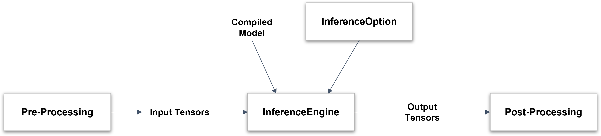
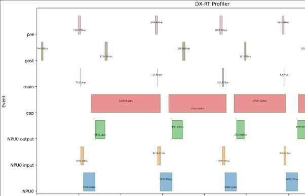

Model Inference
Model File Format¶
The original ONNX model is converted by DX-COM into the following structure.
-
graph.dxnn- A unified DEEPX artifact that contains NPU command data, model metadata, model parameters.
This file is used directly for inference on DEEPX hardware or simulator.
Inference Workflow¶
Here the inference workflow using the DXNN Runtime as follows.

Figure. Inference Workflow
- 1. Compiled Model and optional InferenceOption are provided to initialize the InferenceEngine.
- 2. Pre-processed Input Tensors are passed to the InferenceEngine for inference.
- 3. The InferenceEngine produces Output Tensors as a result of the inference.
- 4. These outputs are then passed to the Post-Processing stage for interpretation or further action.
Prepare the Model¶
Choose one of the following options.
- Use a pre-built model from DX ModelZoo
- Compile an ONNX model into the DX-RT format using DX-COM (Refer to the DX-COM User Guide for details.)
Configure Inference Options¶
Create a dxrt::InferenceOption object to configure runtime settings for the inference engine.
Note. This option is temporarily unsupported in the current version, and will be available in the next release.
Load the Model into the Inference Engine¶
Create a dxrt::InferenceEngine instance using the path to the compiled model directory. Hardware resources are automatically initialized during this step.
If dxrt::InferenceEngine is not provided, a default option is applied.
auto ie = dxrt::InferenceEngine("yolov5s.dxnn");
auto ie = dxrt::InferenceEngine("yolov5s.dxnn", &option);
Connect Input Tensors¶
Prepare input buffers for inference.
The following example shows how to initialize the buffer with the appropriate size.
Refer to DX-APP User Guide for practical examples on connecting inference engines to image sources such as cameras or video, along with the preprocessing routines.
Inference¶
DX-RT provides both synchronous and asynchronous execution modes for flexible inference handling.
1. Run - Synchronous Execution
Use the dxrt::InferenceEngine::Run() method for blocking, single-core inference.
- This method processes input and output on the same thread.
- This method is suitable for simple and sequential workloads.
2. Run - Asynchronous Execution
a. With Wait()
Use RunAsync() to perform the inference in non-blocking mode, and retrieve results later with Wait().
- This method is ideal for parallel workloads where inference can run in the background.
- This method is continuously executed while waiting for the result.
b. With Callback
Use a callback function to handle output as soon as inference completes.
std::function<int(vector<shared_ptr<dxrt::Tensor>>, void*)> postProcCallBack = \
[&](vector<shared_ptr<dxrt::Tensor>> outputs, void *arg)
{
/* Process output tensors here */
... ...
return 0;
};
ie.RegisterCallback(postProcCallBack)
- The callback is triggered by a background thread after inference.
- You can pass a custom argument to track input/output pairs.
Note. Output data is only valid within the callback scope.
Process Output Tensors¶
Once inference is complete, the output tensors are processed using Tensor APIs and custom post-processing logic. You can find the templates and example code in DX-APP to help you implement post-process smoothly.
As noted earlier, using callbacks allows for more efficient and real-time post-processing.
Multiple Device Inference¶
This feature is not applicable to single-NPU devices. Basically, the inference engine schedules and manages multiple devices in real time.
If the inference option is explicitly set, the inference engine may only use specific devices during real-time inference for the model.
Data Format of Device Tensor¶
Compiled models use the NHWC format by default.
However, the input tensor formats on the device side may vary depending on the hardware’s processing type.
Input Tensor Formats
| Type | Compiled Model Format | Device Format | Data Size |
|---|---|---|---|
Formatter |
[N, H, W, C] |
[N, H, W, C] |
8-bit |
IM2COL |
[N, H, W, C] |
[N, H, align64(W*C)] |
8-bit |
- Formatter Type Example:
[1, 3, 224, 224] (NCHW) -> [1, 224, 224, 3] (NHWC) - IM2COL Type Example:
[1, 3, 224, 224] (NCHW) -> [1, 224, 224*3+32] (NH, aligned width x channel)
Output Tensor Formats
The output tensor format is also aligned with the NHWC format, but with padding applied for alignment.
| Type | Compiled Model Format | Device Format |
|---|---|---|
Aligned NHWC |
[N, H, W, C] |
[N, H, W, align64(C)] |
- Output Example:
[1, 40, 52, 36] (NCHW) -> [1, 52, 36, 40+24](Channel size is aligned for optimal memory access.)
Post-processing can be performed directly without converting formats.
API to convert from device format to NCHW/NHWC format will be supported in the next release.
Profile Application¶
Gather Timing Data per Event¶
You can profile events within your application using the Profiler APIs. Please refer to Section 8. API reference.
Here is a basic usage example.
auto& profiler = dxrt::Profiler::GetInstance();
profiler.Start("1sec");
sleep(1);
profiler.End("1sec");
After the application is finished, profiler.json is created in the working directory.
Visualize Profiler Data¶
You can visualize the profiling results using the following Python script.
This generates an image file named profiler.png, providing a detailed view of runtime event timing for performance analysis.

Figure. DX-RT Profiling Report
Script Usage: tool/profiler/plot.py
Use this script to draw a timing chart from profiling data generated by DX-RT.
Optional Arguments
-h, --help: Show help message and exit-i INPUT, --input INPUT: Input.jsonfile to visualize (e.g.,profiler.json)-o OUTPUT, --output OUTPUT: Output image file name to save (e.g., profiler.png)-s START, --start START: Starting position (normalized, > 0.0) within the time interval [0.0-1.0]-e END, --end END: End position (normalized, < 1.0) within the time interval [0.0-1.0]-g, --show_gap: Show time gaps between the start point of each event
Please refer to usage of tool/profiler/plot.py.
How To Create an Application Using DX-RT¶
This guide provides step-by-step instructions for creating a new CMake project using the DX-RT library.
1. Build the DX-RT Library
Before starting, make sure the DX-RT library is already built.
Refer to Chapter 2. Installation on Linus and Chapter 3. Installation on Windows for detailed build instructions.
2. Create a New CMake Project
Create a project directory and an initial CMakeLists.txt file.
3. “Hello World” with DX-RT API
Create a simple source file (main.cpp) that uses a DX-RT API.
#include "dxrt/dxrt_api.h"
using namespace std;
int main(int argc, char *argv[])
{
auto& devices = dxrt::CheckDevices();
cout << "hello, world" << endl;
return 0;
}
4. Modify CMakeLists.txt
Edit the CMakeLists.txt file as follows.
cmake_minimum_required(VERSION 3.14)
project(app_template)
set(CMAKE_CXX_STANDARD_REQUIRED "ON")
set(CMAKE_CXX_STANDARD "14")
# Set the DX-RT library installation path (adjust as needed)
set(DXRT_LIB_PATH "/usr/local/lib")
# Locate the DX-RT library
find_library(DXRT_LIBRARY REQUIRED NAMES dxrt_${CMAKE_SYSTEM_PROCESSOR} PATHS $
{DXRT_LIB_PATH})
# Add executable and link libraries
add_executable(HelloWorld main.cpp)
target_link_libraries(HelloWorld PRIVATE ${DXRT_LIBRARY} protobuf)
Replace /usr/local/lib with the actual path where the DX-RT library is installed.
5. Build the Project
Compile your project using the following commands.
6. Run the Executable
After a successful build, run the generated executable.
You now successfully create and build a CMake project using the DX-RT library.
(Optional) Improving CPU Task Throughput with DXRT_DYNAMIC_CPU_THREAD¶
The USE_ORT option allows for enabling ONNX Runtime to handle operations that are not supported by the NPU. When this option is active, the model's CPU tasks are executed via ONNX Runtime.
To mitigate potential bottlenecks in these CPU tasks, especially under varying Host CPU conditions, an optional dynamic multi-threading feature is provided. This feature monitors the input queue load to identify CPU task congestion. If a high load is detected, it dynamically increases the number of threads allocated to CPU tasks, thereby improving their throughput. This dynamic CPU threading can be enabled by setting the DXRT_DYNAMIC_CPU_THREAD=ON environment variable (e.g., export DXRT_DYNAMIC_CPU_THREAD=ON).
Additionally, if the system observes that CPU tasks are experiencing significant load, it will display a message: "To improve FPS, set: 'export DXRT_DYNAMIC_CPU_THREAD=ON'", recommending the activation of this feature for better performance.
Warning: Enabling the DXRT_DYNAMIC_CPU_THREAD=ON option does not always guarantee an FPS increase; its effectiveness can vary depending on the specific workload and system conditions.